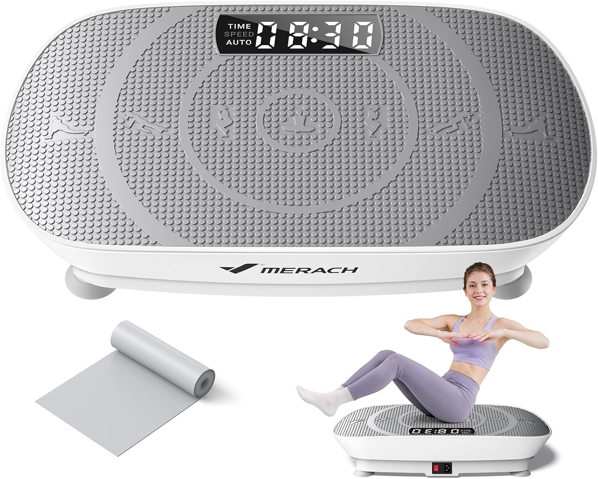
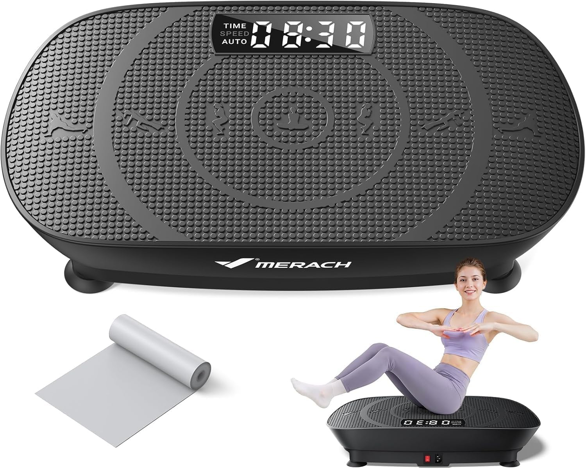

Compare leading vibration plates for U.S. home workouts, budgets and spaces.
Updated July 21, 2026U.S. pricing & availabilityBuyeReports Editorial Desk
Disclosure: We may earn a commission from qualifying purchases. Partner status does not automatically determine ranking placement. Scores are BuyeReports editorial scores, not Amazon customer ratings. Details
Deal check: Only verified Amazon savings of 10% or more are shown. Badges reflect the latest available Amazon check; pricing and savings may vary by location, account and time.
1
36% off

MERACH
BEST OVERALL
MERACH Pro Gray Vibration Plate
A home vibration platform with Bluetooth connectivity, a silicone standing surface and automatic workout mode.
Bluetooth connectivity
Silicone standing surface
Automatic workout mode
9.9
★★★★★★★★★★
7K+ bought in past monthCheck Priceavailable at amazon
2
36% off

MERACH
BEST VALUE
MERACH Pro Black Vibration Plate
The Pro Black version combines Bluetooth connectivity, a silicone standing surface and automatic workout mode in a darker finish.
Use this table to narrow the list by the feature that matters most to you. Product numbers are seller-stated and should be confirmed on the retailer page before purchase.
Rank
Product
Standout detail
Good fit for
Retailer
Product details are checked against current U.S. retailer listings. Confirm dimensions, included accessories, warranty terms and availability on the retailer page before purchase.
CATEGORY OVERVIEW
What a vibration plate can—and cannot—do
A useful buying guide should explain the category, not just list products. Whole-body vibration is best viewed as one training tool within a broader activity plan.
Vibration plates create repeated movement through a standing platform. Depending on the model and the exercise being performed, shoppers may use them for supported squats, calf raises, balance work or short home-fitness sessions. Platform size, surface grip and accessible controls matter because the experience depends on how securely and comfortably the user can position themselves.
Research on whole-body vibration includes many different populations, machine settings and exercise protocols. Some reviews report potential improvements in selected muscle, balance or physical-function outcomes, while other outcomes remain mixed. Those findings should not be treated as a guarantee that every consumer product will produce the same result.
Weight-loss claims deserve particular caution. A 2025 systematic review found that whole-body vibration training by itself did not significantly change body mass, BMI, fat mass or body-fat percentage. We therefore compare these products as fitness equipment—not as medical devices or automatic weight-loss solutions.
BEFORE YOU BUY
What matters in a vibration plate
Do not choose on speed-level count alone. The better fit depends on usable platform area, stability, control range, storage needs and the support offered by the brand.
01
Platform & stability
Footprint, surface grip and stated weight capacity.
02
Motion controls
Useful range, presets and accessible controls.
03
Home fit
Noise, dimensions, portability and storage.
04
Ownership value
Warranty, support, accessories and current price.
05
Included accessories
Remote controls, resistance bands and other listed extras.
06
Seller support
Return terms, warranty language and a reachable support channel.
Important: Vibration platforms are fitness devices, not substitutes for medical care or a complete exercise program. People with health concerns should consult a qualified healthcare professional before use.
FIND YOUR FIT
Start with the way you plan to use it
The strongest choice on paper is not automatically the best choice for every home. Use these four shopper profiles to narrow the ranking before comparing price.
01
Simple first setup
Prioritize readable controls, a remote, sensible presets and a stable surface over a very large speed count.
Look for: easy controls02
Limited floor space
Compare the full footprint and storage position, then leave enough clearance to step on and off safely.
Look for: compact dimensions03
Higher stated capacity
Check the seller-stated limit together with platform width, surface grip, warranty language and return terms.
Look for: capacity + stability04
More training variety
Programs, resistance bands and multiple motion modes may add variety, but only if the controls remain practical.
Look for: useful features
GETTING STARTED
A safer first-session checklist
Always follow the instructions supplied with the specific model. There is no single routine that applies to every machine or every user.
01
Prepare the space
Place the unit on a stable surface, clear the surrounding area and keep a secure support point within reach if the manual recommends one.
02
Learn the controls
Begin with the manufacturer’s lowest appropriate setting and a short familiarization session before adding movement or resistance bands.
03
Pay attention to your response
Stop if you feel pain, dizziness or instability. Ask a qualified healthcare professional before use if you have a medical condition or other safety concern.
OUR RESEARCH PROCESS
How this ranking is assembled
BuyeReports compares products for the U.S. market using documented listing information and a consistent editorial framework. We clearly separate research from commercial links.
01
Listing check
We confirm the product identity, U.S. availability and the features stated on the current listing.
02
Shopper criteria
We organize the comparison around home fit, controls, stated capacity, accessories and ownership considerations.
03
Side-by-side review
Products are compared within the category. A higher speed number alone does not determine placement.
04
Ongoing refresh
Links, availability and product details may change, so readers are directed to the retailer for the latest information.
Common questions before choosing a vibration plate
These answers focus on product selection and listing information. They are not medical guidance.
Can a vibration plate help with weight loss?
It should not be presented as a stand-alone weight-loss solution. Current research does not show a significant body-mass benefit from whole-body vibration alone. Nutrition, total activity and an appropriate exercise plan remain central.
How long should a beginner use a vibration plate?
There is no universal session length because machines, settings and users differ. Follow the product manual, begin with the lowest appropriate setting and a short familiarization period, and increase only within the manufacturer’s guidance.
Do higher speed-level numbers always mean a better machine?
No. Manufacturers may use different control scales, so the numbers are not always directly comparable. Consider the usable control range, presets, platform stability and how clearly the controls are presented.
How much room should I allow at home?
Check the listed product dimensions, then allow comfortable clearance around the platform for stepping on, stepping off and using any included resistance bands. Measure your intended storage space as well.
What does the stated weight capacity tell me?
It is the maximum capacity stated by the seller or manufacturer. Follow the product manual and retailer listing, and also consider platform size, build, stability and support terms.
Are the prices on BuyeReports live?
No. Prices, promotions and availability can change at any time. The linked retailer page is the source for the current price and purchase terms.
Does an affiliate relationship decide the ranking?
No. BuyeReports may earn a commission from qualifying purchases, but partner status does not automatically determine placement. Open positions stay open until the product information is verified.
Can a vibration plate replace a complete exercise program?
No. It is one piece of fitness equipment and should not be treated as an automatic substitute for strength, aerobic and mobility work—or for professional medical advice.
WHY BUYEREPORTS
Useful comparisons, without invented testing claims.
Our editorial process structures seller-stated product specifications, current availability, support information and category-relevant details for U.S. shoppers.
Commerce links are clearly disclosed, while our quality checks focus on accurate labels, working destinations and product information that can be traced to a current listing.